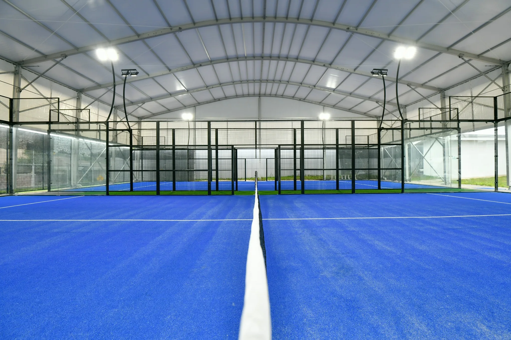

Padel vs Pickleball at a Glance
| Factor | Padel | Pickleball |
|---|---|---|
| Playing area | Enclosed 10 × 20 m, 3–4 m walls and fencing | Open court, about 30 × 60 ft including run-off |
| Basic setup | Glass and steel enclosure, specialist turf, lighting | Surface, net and lines; can reuse existing floors |
| Typical hourly court rate (US) | $60–100+ | $30–45 |
| Minimum viable indoor facility | Fewer courts | Often 8–12 courts |
| US players | About 100,000 | 19.8 million (2024) |
FIP rules require a fully enclosed 10 × 20 m padel playing area with walls and fencing of 3–4 m, plus sport-specific surface, safety and lighting requirements. The Racquet Sports Institute puts pickleball hourly rates at $30–45 against $60–100+ for padel, so a pickleball court earns roughly half the revenue at comparable utilization.
Padel vs Pickleball: How the Games Differ
Before comparing returns, it helps to know how differently the two sports play. Padel is a walled doubles game that uses glass rebounds; pickleball is an open-court game built around a non-volley zone at the net. Padel is also often confused with paddle tennis and platform tennis; see Padel vs Paddle Tennis vs Platform Tennis.
| Rule or equipment | Padel | Pickleball |
|---|---|---|
| Court lines | 20 × 10 m, fully enclosed | 20 × 44 ft (6.1 × 13.4 m), open |
| Walls | Glass and mesh walls are in play after the bounce | No walls; balls out of the lines are out |
| Net height (centre) | 0.88 m | 34 in (0.86 m) |
| Racket and ball | Solid, perforated stringless racket; pressurised ball similar to a tennis ball | Solid paddle; light perforated plastic ball |
| Serve | Underhand, after a bounce, struck at or below the waist | Underhand, landing diagonally beyond the non-volley zone |
| Net play | Volleys allowed anywhere | No volleys inside the 7 ft non-volley zone (“the kitchen”) |
| Scoring | Tennis scoring: points, games and sets | Games usually to 11, won by 2 |
| Format | Almost always doubles | Singles and doubles |
For facility owners, the practical consequence is the enclosure: padel needs a glass and steel court system, while pickleball can often be lined onto an existing surface.
Where Pickleball Wins
Lower setup cost. Surfacing, nets and markings on an existing concrete floor or sports hall can run from a few hundred pounds for DIY to £3,000–8,000 installed, and one tennis court can be marked for two to three pickleball courts. Not every project is cheap, though: Miami-Dade estimated $171,500 for a six-court pickleball pad at Tamiami Park in 2022, before contingencies.
A much larger player base. SFIA reports that 19.8 million Americans played pickleball in 2024, up 45.8% on 2023 and 311% over three years.
Revenue per dollar invested. Pickleball operators make a fair counterpoint: padel charges roughly 50–70% more per hour, but pickleball often wins on revenue per dollar invested.
Where Padel Wins
Revenue per court-hour. Padel is almost always played as doubles, so every booking has four paying players, and hourly rates are higher.
Fewer courts to reach a viable club. Because each pickleball court earns less, standalone indoor pickleball facilities typically need more courts; Structures recommends at least 8, and The Picklr franchise standardised at about 10 per location. Padel needs fewer courts, but not too few: one model shows a 4-court padel facility at $45 per hour and 50% utilization earning about $294,000 a year in court revenue, barely covering $270,000+ of lean fixed operating costs. See how many padel courts a club needs.
An underbuilt market. The US has around 700 padel courts and some 100,000 players, while 3,282 new padel clubs opened globally in 2024, 26% more than in 2023, according to Playtomic.
The Demand Question Matters More Than the Sport
Pickleball growth is slowing. SFIA's mid-year 2025 data still shows it as the fastest-growing US sport, but at 14.7%, well below earlier years. Most players are casual: 13.6 million play 1–7 times a year, against 6.2 million who play 8 or more times. Casual participation is not the same as regular bookings.
Padel has the opposite problem: few people know the sport yet, so a new club has to educate its market before it fills courts. Sweden shows what happens when supply runs ahead of demand; see why padel clubs fail.
The operator matters as much as the sport. Across 11 Miami-area padel clubs, estimated 90-day revenue per court ranged from roughly $4,000 to $50,000, an 11.5-fold spread. A strong market does not rescue a weak venue.
Compare regular local players, clear height, capital and fixed costs before comparing headline growth figures.
Can You Do Both?
Many operators combine the two: pickleball for volume and community, padel for premium court revenue. Plan the building for both from the start. Padel needs more clear height and a fixed enclosure, while pickleball courts can be re-lined or relocated more easily.
Decision Checklist
- Does your site suit a few enclosed padel courts or many open pickleball courts?
- How much capital do you have, and how fast must it pay back?
- How many regular players, not casual ones, does each sport have in your catchment?
- Are you targeting premium bookings and memberships or high-volume community play?
- Converting a tennis court? Compare both options with tennis court to padel conversion.
- What are your fixed costs and break-even court-hours? See padel club profitability.
Planning a Padel or Hybrid Club?
Start with padel court cost and court dimensions, then send us your site details.
Padel vs Pickleball FAQ
Is padel more profitable than pickleball?
Per court-hour, usually yes: padel commands higher hourly rates with four players per booking. Pickleball costs less to build and can win on revenue per dollar invested, so overall profitability depends on site, demand and operations.
Is pickleball cheaper to build than padel?
Yes. Pickleball can often reuse existing floors or tennis courts with surfacing, nets and lines, while padel needs a glass and steel enclosure, specialist turf and lighting.
How many courts does a pickleball or padel facility need?
Industry sources suggest standalone indoor pickleball facilities often need 8-12 courts. Padel usually needs fewer, but a very small club can still struggle to cover fixed costs.
How many people play pickleball and padel in the US?
SFIA reported 19.8 million US pickleball participants in 2024. Padel is far smaller, with about 100,000 players and around 700 courts.
Can one facility offer both padel and pickleball?
Yes. Hybrid clubs combine pickleball volume with padel court revenue. Plan clear height, layout and enclosures for both from the start.
Sources: SFIA 2025 Topline Report (via Pickleball.com); SFIA mid-year 2025 (via The Kitchen); Racquet Sports Institute; Sports Destinations; Fortune; Padel Creations; Branded Pickleball.